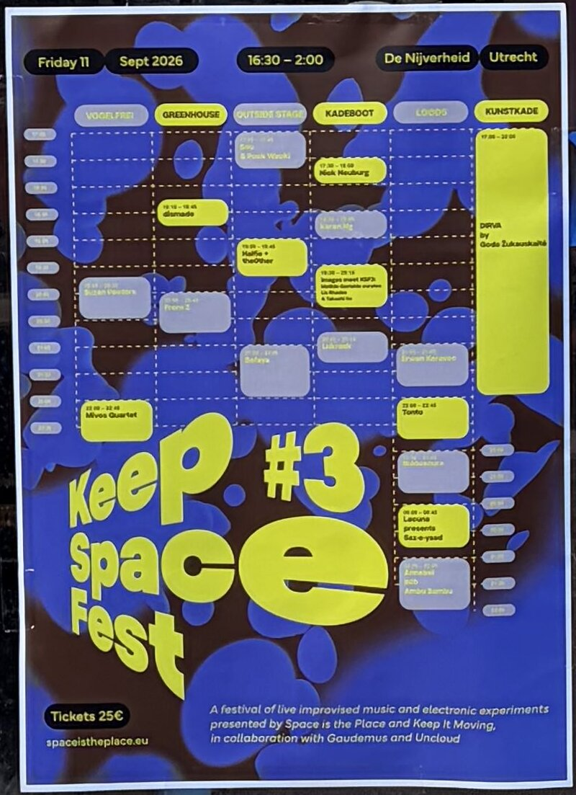

Selected Works
Live performances with Puck Wacki
Performances with Puck Wacki at Conflux Festival and Keep.Space.Fest in the Netherlands.
Conflux Festival · Katoenhuis, Rotterdam · September 2026
Live performance with Puck Wacki on Kinetic Sounds, Klankvorm’s mechanical orchestra of robotic musicians, at Conflux Festival.
Keep.Space.Fest #3 · De Nijverheid, Utrecht · 11 September 2026

Live recording:
Macao Alternative Music Festival (2023)
Free improvisation performance with saxophone and live electronics presented at the Macao Alternative Music Festival.
The work explores interaction between acoustic gesture and electronic processing in a live improvisational context.
Push The Envelope – Echoes of Silver Salt (2023)
Audiovisual performance exploring sonification and interaction between sound and moving image.
The project investigates how audiovisual relationships can generate emergent structures between sonic and visual material.
Guia Experimental Live (2020)
Live improvisation performance exploring experimental electronic music and real-time interaction.
Rebound (2019)
Improvisation project based on modular synthesis and feedback systems, exploring unpredictable sonic behavior and live interaction.
Wartime Broadcasting Service – Faslane (2017)
Cassette album by Faslane, released on Day’s Eye Records (DAYSEYE010CC), exploring experimental electronic music and noise-based composition.